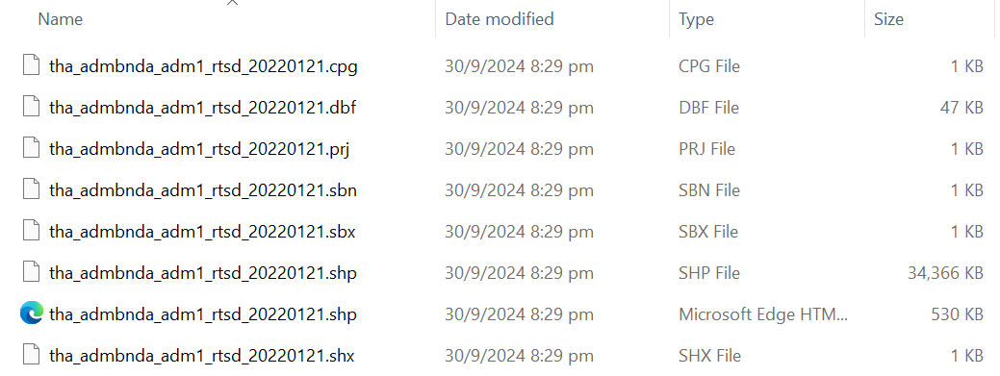

pacman::p_load(sf, sfdep, tmap, plotly, tidyverse, lubridate)Take-Home Exercise 02
Discovering Impacts of COVID-19 on Thailand Tourism Economy using Spatial & Spatio-Temporal Statistics
1.0 Overview
Tourism is one of Thailand’s largest industries, accounting for some 20% of the gross domestic product (GDP). In 2019, Thailand earned 90 billion US$ from domestic and international tourism, but the COVID-19 pandemic caused revenues to crash to 24 billion US$ in 2020.
The figure below shows the total revenue receipt from tourism sector from January 2019 until Feb 2023. This figure also reveals that the revenue from tourism industry have been recovered gradually since September 2021.

However, it is important to note that the tourism economy of Thailand are not evenly distributed. The figure below reveals that the tourism economy of Thailand are mainly focused on five provinces, namely Bangkok, Phuket, Chon Buri, Krabi and Chiang Mai.

1.1 Objectives
Through this exercise, we are interested to discover the following:
If the key indicators of tourism economy of Thailand are independent from space and space and time
If the tourism economy is indeed spatial and spatio-temporal dependent
- If so, we would like to detect where are the clusters and outliers, and the emerging hot spot/cold spot areas
1.2 The Task
We will be performing the following tasks in this exercise:
Preparation of the following Geospatial data layer:
Study area layer in sf polygon features (at province level incl. Bangkok)
Tourism economy indicators layer within the study area in sf polygon features
Derived tourism economy indicator layer in spacetime s3 class of sfdep, with time series kept at month and year levels
Perform Global Spatial Autocorrelation Analysis using sfdep methods
Perform Local Spatial Autocorrelation Analysis using sfdep methods
Perform Emerging Hot/Cold Spot Analysis using sfdep methods
1.3 Analytical Tools
The following R packages will be used for this exercise:
sf, which is used for importing and handling geospatial data in R
sfdep, which is used for spatial dependence with spatial features
tmap, which is used to prepare cartographic quality choropleth maps
plotly, for creating interactive graphs
tidyverse, which is mainly for wrangling attribute data in R
lubridate, which is used to parse and manipulate dates
The code chunk below uses p_load() of pacman package to check if the necessary packages have been installed in R. If yes, we will load the packages on R environment as shown below.
2.0 Data
2.1 Getting the Data
For this exercise, we will be using two datasets:
- Thailand Domestic Tourism Statistics from Kaggle

- Thailand - Subnational Administrative Boundaries from HDX

2.2 Importing the Data
These are the files we have for Thailand Domestic Tourism Statistics:

Note that we will only use Version 2 of the dataset.
The code chunk below is used to load the ver2 data into our R environment.
#|eval: false
tourism <- read_csv("data/aspatial/thailand_domestic_tourism_2019_2023_ver2.csv")Rows: 30800 Columns: 7
── Column specification ────────────────────────────────────────────────────────
Delimiter: ","
chr (5): province_thai, province_eng, region_thai, region_eng, variable
dbl (1): value
date (1): date
ℹ Use `spec()` to retrieve the full column specification for this data.
ℹ Specify the column types or set `show_col_types = FALSE` to quiet this message.write_rds(tourism, "data/rds/tourism.rds")The code chunk below will be used to import the saved tourism.rds into R environment.
tourism <- read_rds("data/rds/tourism.rds")These are the files we have for Thailand - Subnational Administrative Boundaries:

Recall that this HDX data source contains information on 4 administrative levels - 0 for Country, 1 for Province, 2 for District and 3 for Sub-District. Hence, there were numerous files downloaded from this data source. However, we only want to focus on Province-level analysis for this exercises. As such, we will only load the ADM1 data into our R environment.
The code chunk below is used to load the ver2 data into our R environment.
#|eval: false
boundaries = st_read(dsn = "data/geospatial",
layer = "tha_admbnda_adm1_rtsd_20220121")Reading layer `tha_admbnda_adm1_rtsd_20220121' from data source
`C:\byebhai8\ISSS626-GeospatialAnalytics\Take-Home_Ex\Take-Home_Ex02\data\geospatial'
using driver `ESRI Shapefile'
Simple feature collection with 77 features and 16 fields
Geometry type: MULTIPOLYGON
Dimension: XY
Bounding box: xmin: 97.34336 ymin: 5.613038 xmax: 105.637 ymax: 20.46507
Geodetic CRS: WGS 84write_rds(boundaries, "data/rds/boundaries.rds")The code chunk below will be used to import the saved boundaries.rds into R environment.
boundaries <- read_rds("data/rds/boundaries.rds")3.0 Data Wrangling
Let’s take a quick look at the newly imported data by using the glimpse() function of dplyr package as shown below.
glimpse(tourism)Rows: 30,800
Columns: 7
$ date <date> 2019-01-01, 2019-01-01, 2019-01-01, 2019-01-01, 2019-01…
$ province_thai <chr> "กรุงเทพมหานคร", "ลพบุรี", "พระนครศรีอยุธยา", "สระบุรี", "ชัยนาท…
$ province_eng <chr> "Bangkok", "Lopburi", "Phra Nakhon Si Ayutthaya", "Sarab…
$ region_thai <chr> "ภาคกลาง", "ภาคกลาง", "ภาคกลาง", "ภาคกลาง", "ภาคกลาง", "…
$ region_eng <chr> "central", "central", "central", "central", "central", "…
$ variable <chr> "ratio_tourist_stay", "ratio_tourist_stay", "ratio_touri…
$ value <dbl> 93.37, 61.32, 73.37, 67.33, 79.31, 71.70, 64.65, 71.21, …The tourism data serves as the attribute table we will use moving forward.
Likewise, we can run the glimpse() function on the boundaries data for some quick insights.
glimpse(boundaries)Rows: 77
Columns: 17
$ Shape_Leng <dbl> 2.417227, 1.695100, 1.251111, 1.884945, 3.041716, 1.739908,…
$ Shape_Area <dbl> 0.13133873, 0.07926199, 0.05323766, 0.12698345, 0.21393797,…
$ ADM1_EN <chr> "Bangkok", "Samut Prakan", "Nonthaburi", "Pathum Thani", "P…
$ ADM1_TH <chr> "กรุงเทพมหานคร", "สมุทรปราการ", "นนทบุรี", "ปทุมธานี", "พระนครศรีอ…
$ ADM1_PCODE <chr> "TH10", "TH11", "TH12", "TH13", "TH14", "TH15", "TH16", "TH…
$ ADM1_REF <chr> NA, NA, NA, NA, NA, NA, NA, NA, NA, NA, NA, NA, NA, NA, NA,…
$ ADM1ALT1EN <chr> NA, NA, NA, NA, NA, NA, NA, NA, NA, NA, NA, NA, NA, NA, NA,…
$ ADM1ALT2EN <chr> NA, NA, NA, NA, NA, NA, NA, NA, NA, NA, NA, NA, NA, NA, NA,…
$ ADM1ALT1TH <chr> NA, NA, NA, NA, NA, NA, NA, NA, NA, NA, NA, NA, NA, NA, NA,…
$ ADM1ALT2TH <chr> NA, NA, NA, NA, NA, NA, NA, NA, NA, NA, NA, NA, NA, NA, NA,…
$ ADM0_EN <chr> "Thailand", "Thailand", "Thailand", "Thailand", "Thailand",…
$ ADM0_TH <chr> "ประเทศไทย", "ประเทศไทย", "ประเทศไทย", "ประเทศไทย", "ประเทศ…
$ ADM0_PCODE <chr> "TH", "TH", "TH", "TH", "TH", "TH", "TH", "TH", "TH", "TH",…
$ date <date> 2019-02-18, 2019-02-18, 2019-02-18, 2019-02-18, 2019-02-18…
$ validOn <date> 2022-01-22, 2022-01-22, 2022-01-22, 2022-01-22, 2022-01-22…
$ validTo <date> NA, NA, NA, NA, NA, NA, NA, NA, NA, NA, NA, NA, NA, NA, NA…
$ geometry <MULTIPOLYGON [°]> MULTIPOLYGON (((100.6139 13..., MULTIPOLYGON (…The boundaries data contains the geospatial information we require for our analysis.
Global Spatial Autocorrelation Analysis
xx
Local Spatial Autocorrelation Analysis
xx
Emerging Hot Spot Analysis
xx